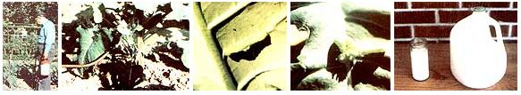

Most people know the value of milk, but not many know that it can be used to prepare . . .PHOTOS BY THE AUTHOR
Spraying your plants with milk won't drive bugs away from your garden, but the dairy product can be used to culture Bacillus thuriugiensis Berliner, a well-known bacterial pesticide sold under such brand names as Dipel, Thuricide, and Biotrol. The agent is quite effective in controlling-among a number of insect problems-infestations of loopers . . . those pesky little worms (they're actually moth larvae) that attack broccoli, cabbage, cauliflower, and other members of the cole family. Once eaten, the bacteria paralyze the larvae's intestinal tracts and bring about their death in two to four days.
Before you spray your garden with thuringiensis , though, be aware that this bacterial-warfare weapon is fatal to the caterpillars of all Lepidoptera (an order of insects that includes many lovely, and relatively harmless, moths and butterflies) . . . so please don't employ the remedy in cases where simply handpicking the loopers off your plants will do the job. (That rule, of course, applies to the use of any pesticide, natural or otherwise!)
However, if the little green caterpillars get completely out of control, you can go to the store and buy some commercially prepared Bacillus thuringiensis (BT) . . . and use the product, in conjunction with the pests themselves, to brew your own supply from that point on! The basic procedure for doing so was mologist at Louisiana State University's Cooperative Extension Service in Baton Rouge. Dr. Pollet decided that since milk is a good medium for bacterial culture ( a fact that not only causes the liquid-especially when unrefrigerated-to spoil, but allows us to harvest such by-products as cheese, yogurt, and kefir), and since Dipel, Thuricide, and Biotrol are all bacterial pesticides . . . it should be possible to use milk to extend the bacteria's useful lives.
According to a report on Dr. Pollet's work, the process goes like this: The pesticide is sprayed on the plants, where it's eaten by the loopers. Then the tiny parasites develop inside the caterpillars' bodies and kill their hosts. When the infected larvae are gathered before the bacteria in them die, and are blended into milk (an effective culture for the microorganisms), the bacteria strain will stay alive and can be used again to kill other loopers.
After reading this report, I decided to conduct my own experiment: I wanted to see for myself whether the system would work. (Besides, I always jump at any chance to save money, and commercial bacterial pesticides are expensive!)
All the project involved was gathering a palmful of infected loopers from a section of my cabbage patch that had been treated with some store-bought BT . . . mashing and blending them into one pint of warm milk (I thought a lukewarm environment would promote bacterial reproduction... then letting the looper or milk mixture stand for three day, sure the caterpillars you start with are still fresh. Once the larvae are dried up chances are the bacilli will no longer be active.) Next, I strained the brew through cheesecloth, diluted it with water to make a gallon of liquid sprayed the concoction on some looper-infested broccoli plants.
Two days later, it was evident that the larvae were no longer eating. By the next day they were becoming discolored, and soon thereafter they were very dead. My experiment was a success!
Having once used loopers infected with bacteria from a commercial source to make a new batch of pesticide, I wondered whether I could continue the chain by using pests that had been sprayed with my homebrew (much as a starter from each batch of yogurt can be used to make additional yogurt). So I gathered a dozen loopers from the brocolli, treated with my pesticidal milk shake processed them in the same manner sprayed a second infested patch. This third generation mixture proved to be just as effective as the first and second applications had been.
And just how many times could the process be repeated? Well, I really know, but it's reasonable to expect that as long as the Bacillus thurangiensis Berliner can be kept alive-and milk to provide a ready means of doing that-the bacteria will live to serve you again . . . and again . . .
|
 FROM LEFT TO RIGHT: The author attacks some broccoli-hungry loopers. . . . It's necessary to apply the spray to the underside of the leaves where the pests are feeding. . . . This is how a healthy looper looks . . . . This one, showing the effects of the pesticide, can be used to brew a new batch of Bacillus thuringiensis. . . . One pint of the milk mixture will yield one gallon of spray solution. |
|
|